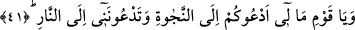
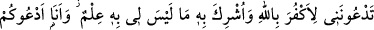
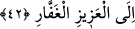

ermeyecek. Bunun sebebi de orada hiç kimsenin mahzun edilmeyecek olmasıdır. Daha
sonra konaklarımıza geleceğiz ve bizi «Buyur, hoşgeldin!» diyerek eşlerimiz
karşılayacak ve şöyle diyecekler: «Bugün sende bizden ayrıldığın vakit sahip
olduğundan da yüksek bir güzellik görüyoruz.» Cennetlik kişi diyecek ki: «Evet,
bugün Cebbar olan Rabbimizle bir mecliste beraberdik, geri dönerken elde ettiğimiz
bu güzelliği orada kazanmışızdır.»”[187]
41. Ey kavmim! Nedir bu hal? Ben sizi kurtuluşa çağırıyorum, siz beni ateşe
çağırıyorsunuz.
Kâşifî der ki: Firavun kavmi Harbil’in sözlerinden îman ettiğini anladılar. Kınamaya
başladılar ve “Firavun’a tapmaktan yüz çevirip başkasına ibâdet etmekten utanmıyor
musun?” dediler. Harbil îkâz sadedinde, ola ki gaflet uykusundan uyanırlar diye tekrar
seslendi. Sonra:“Ey kavmim! Nedir bu hal?” dedi. Bu kınama yollu bir sorudur. “Ben
sizi” tevhide sarılarak ateşten “kurtuluşa çağırıyorum, siz ise beni” şirk koşmak
suretiyle “ateşe çağırıyorsunuz!”
Hayretin sebebi, onun kavmini kurtuluşa çağırması değil, onların kendisini ateşe
çağırmasıdır. Bir nevi şöyle demiş olmaktadır: “Allah aşkına söyleyin nedir bu hal ki
ben sizi hayra dâvet ederken siz beni şerre dâvet ediyorsunuz!?”
Bazı müfessirler ise bu ifâdeyi “Bana ne oluyor ki seni üzüntülü görüyorum?”
ifâdesine benzeterek “Sana ne oluyor, niçin üzüntülüsün böyle?” anlamına
hamletmektedirler. Buna göre mânâ: “Size ne oluyor ki...” olmaktadır.
42. Siz beni, Allah’ı inkâr etmeye ve hiç tanımadığım nesneleri O’na ortak
koşmaya çağırıyorsunuz. Ben ise sizi, azîz ve çok bağışlayan Allah’a dâvet
ediyorum.
“Siz beni Allah’ı inkâr etmeye ve” mâbudluk konusunda Allah Teâlâ ile herhangi bir
ortaklığı bulunduğunu “hiç
tanımadığım
nesneleri
O’na
ortak
koşmaya
çağırıyorsunuz.”
“Bilgisinin bulunmadığını” söylerken, esâsen kinâye yoluyla, mâlûmun yâni ortaklık
atfettikleri varlıkların Rabliği diye bir şeyin olmadığını kasdetmektedir. Bu, bir şeyin
yokluğunun, kendisinin ayrılmaz parçasının yokluğuna hükmedilerek gösterilmesi